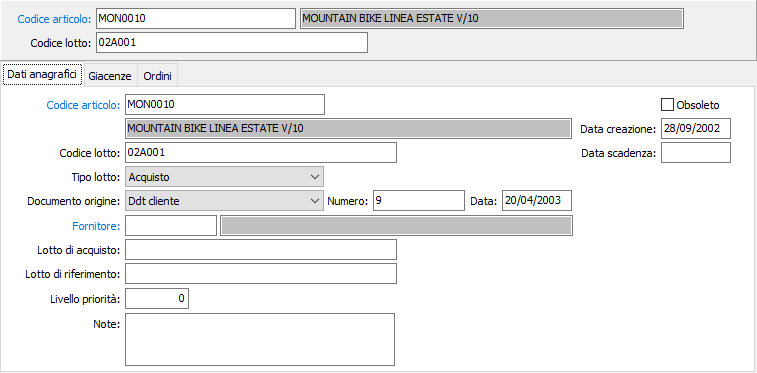

Dati anagrafici

CODICE PRODOTTO: codice che individua il prodotto a cui associare il lotto. Sul campo sono attive le funzioni di ricerca (F9).
DATA CREAZIONE: indica la data in cui il lotto è stato caricato. Al momento del caricamento di un nuovo record in questo campo viene proposta la data di sistema.
CODICE LOTTO: campo alfanumerico che individua il lotto.
TIPO LOTTO: definisce la tipologia del lotto; Acquisto, Produzione o Derivato.
DATA SCADENZA: indica l'eventuale data di scadenza del lotto.
DOCUMENTO DI ORIGINE: indica il documento da cui è originato il lotto. Valori possibili: Ddt clienti, fattura cliente, ordine cliente, offerta cliente, disposizione, Ddt fornitore, fattura fornitore, ordine fornitore, movimento di magazzino, richiesta di acquisto, rientro da lavorazione, versamento ODL, autofattura.
NUMERO: numero del documento di origine del lotto.
DATA: data del documento di origine del lotto.
FORNITORE: codice dell'eventuale fornitore di provenienza. Sul campo sono attive le funzioni di ricerca (F9) sulla tabella fornitori.
LOTTO DI ACQUISTO: numero dell'eventuale lotto di acquisto.
LOTTO DI RIFERIMENTO: codice dell'eventuale lotto di riferimento. Sul campo sono attive le funzioni di ricerca (F9) sulla tabella stessa.
LIVELLO DI PRIORITÀ: campo numerico che definisce la priorità dei lotti del prodotto.
NOTE: campo note interne.
OBSOLETO: flag attivabile dall’utente per inibire il possibile utilizzo dell’elemento di tabella in esame nelle successive transazioni.